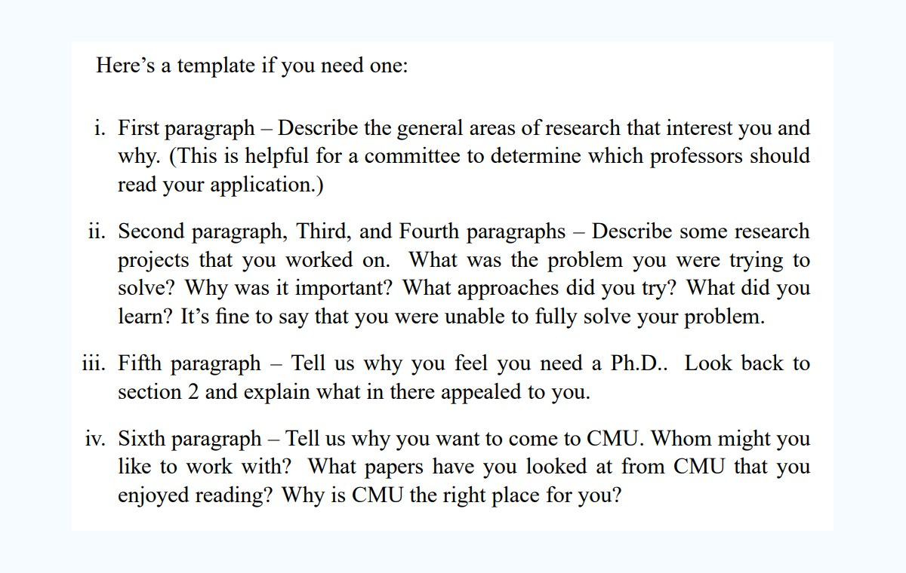

留学申请不完全指南
留学与国内上学之间的区别，首要考虑的是经济和语言因素。PhD 项目尤其意味着导师需要承担较长周期的培养和经费投入，因此申请材料要尽快体现清晰、真诚、具体的研究兴趣。
申请材料需要展示学术能力或潜力：critical thinking、相关研究或项目经历、明确的研究 fit，以及你为什么适合这个项目和这所学校。沟通邮件、Personal Statement 和推荐信都应该围绕这些核心信息展开。

- Make your point fast; reviewers may only scan each material for a short time.
- Show a clear and sincere interest in the faculty's research area.
- Use careful, polished English expression in application materials and emails.
- Choose recommenders who can speak directly to your academic ability and research potential.